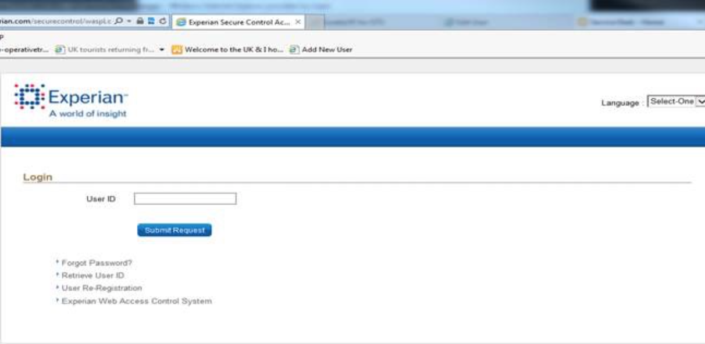
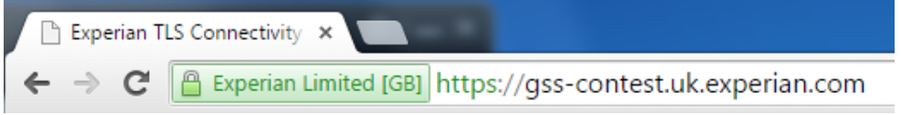
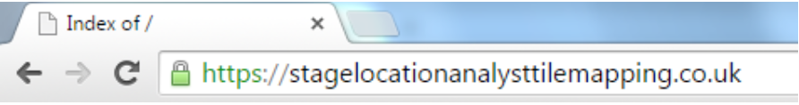
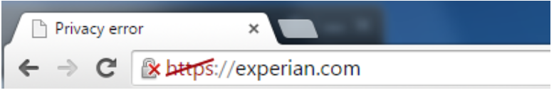
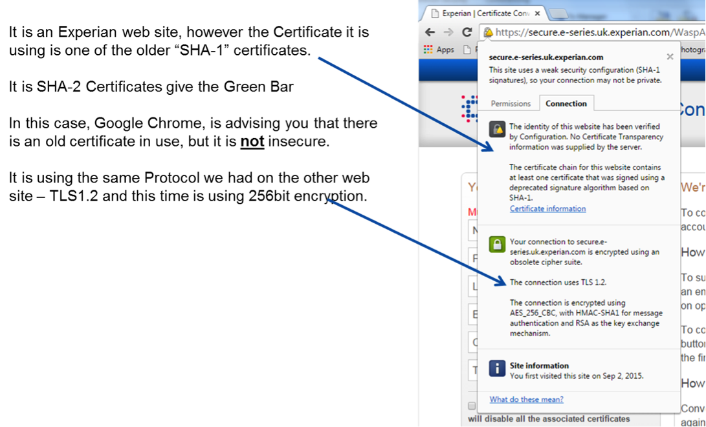

Experian web security upgrade FAQs
These FAQs are in relation to the web security upgrade being undertaken by Experian. They relate to the first phase of the upgrades, from SHA-1 to SHA-256 Certificate encryption.
These FAQs are for internal purposes only. Please do not send or distribute them in full or part to clients, resellers or suppliers. We will provide a separate set of FAQs for clients. A separate set of FAQs will also be provided for phase 2 – upgrading the protocols.
An Overview to the Security Upgrades
-
What is the web security update Experian are doing?
As part of our continuous systems and security management work, and in-line with a global, cross-industry initiative, we’re increasing the online security for our internet based products and systems.
We’re upgrading the way we encrypt and protect the data we exchange with clients. It will make sure we comply with new, global, industry-wide standards. There are three parts to the encryption: certificates, ciphers and protocols. We are increasing the security for all three parts.
In phase 1 of Project Norton, we’ll upgrade our certificates and ciphers. In phase 2, we’ll upgrade our protocols.
-
What is a cipher?
A cipher is coding that encrypts information or data that you input in to a website or web based system. This helps to protect information that is transferred over the internet.
-
What is protocol?
Protocol are the rules by which data is exchanged between the web site and the client; consider them a language – the website and the client ‘agree’ on a common language that they can both speak. By 26 June 2016, some ‘languages’ (including our current protocol of SSL) are no longer acceptable to the PCI and the FCA. Consequently Experian must stop offering them as options and move to the new version which is TLS.
-
What is SHA-256 encryption?
SHA-256 encryption is level of encryption used to code any information provided over the internet. We are upgrading our certificates from SHA-1 to SHA 256.
Why are Experian updating their Web security?
Our changes are part of a global, cross-industry initiative to enhance security and encryption across the internet. Most of the world’s websites are built on SSL encryption; and 90% of that encryption relies on SHA-1 security certificates. These still keep web users safe. But SHA-256 security certificates give much greater protection.
If we don’t make this upgrade internet browsers will report our services as unsecure. Google & Microsoft have stated that from January 2016, they will display a warning message whenever anyone accesses a site, product or system which uses SHA 1.
The Payment Card Industry Security Standards Council (PCI) is continuously improving the published standards required to manage payment card security for all companies using payment cards. All companies that handle (process, transmit or store) payment cards must be on the latest, supported Protocol technology (TLS 1.2) by June 2016.
When are the upgrades happening?
We’ll upgrade our certificates to SHA-256 and increase the accepted encryption of our ciphers by the end of January 2016.
After that, we’ll update the protocols for all our products that handle payment card data. By the end of June 2016 they’ll recognise more secure encryptions only (TLS 1.2 rather than the current SSL). We’ll update the protocols for everything else by the end of November 2016).
When are you upgrading certificates in User Acceptance Testing (UAT)?
Before we upgrade the certificates live into our products and systems, we will make the changes within our UAT environment. This will give us, and our clients who access UAT, time to ensure that everything works, without affecting the live product.
Certificates for websites
- Will be upgraded from 4.30pm on Sunday 29 November 2015.
- We’ll test and fix any issues between 6pm and 8pm.
- From 8pm and 9.30pm we’ll remove issues we haven’t resolved and make final tests.
Certificates for web services that make up the Experian written security system (known as WASP)
WASP stands for Web Application Security Protocol and refers to Experian built security system protecting data within E-Series, CEMs and a few others.
- Will be upgraded from 6pm on Wednesday 2 December 2015.
- We’ll test and fix any issues between 6pm and 8pm.
- From 8pm and 9.30pm we’ll remove issues we haven’t resolved and make final tests.
When will we you upgrade the actual certificates?
We will follow a very similar schedule for upgrading the certificates in production.
- Certificates on our websites will be upgraded on 10 January 2016.
- Web services which surround WASP will be upgraded on 17 January 2016.
- All other web services will be upgraded on 21 January 2016.
Impact of the upgrades
Should I be concerned by the upgrades?
No. Strengthening our web security is not only the right thing to do; it’s also a global, industry-wide initiative. Almost every organisation that uses online programmes to handle personal data will be moving on to SHA-256.
You should make sure your systems are compatible. Within the email you have received there is a link to a help hub that will guide you through how to check if your systems are compatible and what to do if they are not.
Will I be affected? Are there any known systems which won’t work with the new SHA-256 Certificates?
If they’ve been onto the Help Hub and have been unable to access the page please follow instructions under Q14
If they’ve not been onto the Help Hub
The upgrade will affect all of our clients as it is being made to all of our web based products and systems.
However, you’re unlikely any issues in continuing to access Experian products and systems unless:
1. You have an internal networking system or security devices in place (such as Proxy Gateways, Network Concentrators or Load Balancers).
- If this is the case, your IT Team or System Administrator may need to download and install a new SHA-256 certificate key chain.
- You can find links to download the SHA-256 Certificates (and further details on how to install these certificates) on the Help Hub.
2. Or if you access our systems via a web browser:
- You may experience problems if you’re not using a supported browser (typically lower than IE 6 (Service Pack 3)).
- If this is the case you may need to install a new SHA-256 certificate key chain on your browser.
- A few clients who are accessing the internet from a browser lower than IE 6 (Service Pack 3) may need to update their browser. But few clients are likely to have this problem as web browser analytics show less than 0.2% of the population is on IE 6.
Note to Agent: you can find a list of supported browsers at Q23
Clients can also test their own system configuration on the following site:
Where can I download the new SHA-256 Certificates?
Note to Agent: (Make sure you are speaking to someone in the technical or IT dept.)
There are two key chains, L1K is for standard SHA-2 certificates (used with Web Services) and Extended Verification (EV) certificates are typically used on Web Sites. Installing both will give you the maximum compatibility. Links to both are available in the help hub link in the email we have sent you? Have you got these?
If no: You can download the new SHA 256 certificates from our preferred Certificate Authority supplier; Entrust. They also provide detailed instructions on how to install them on your internal system.
- L1K (UA Intermediate) chain are here http://www.entrust.net/knowledge-base/technote.cfm?tn=8863
- L1M (EV Intermediate) chain are here http://www.entrust.net/knowledge-base/technote.cfm?tn=8910
We would recommend you perform end-to-end testing across your organisation to ensure connection. If you are a user of our User Acceptance Testing (UAT) environment, then please perform necessary tests within this infrastructure.
Note to Agent: These links are all on the Help Hub
Are our current products and systems which run on SHA-1 Certificates still secure?
Yes, SHA-1 still provides a secure encryption connection. The reason we are upgrading our certificates to SHA-256 is that these offer enhanced security and protection.
Getting ready for the upgrades
I am not the right person within my organisation to deal with this. Who should I forward this to?
We strongly advise you to speak to IT department, or system administrator, and forward the email you received on to the relevant person.
Alternatively I can take their details for you and get an email sent to them?
Note to agent: You will be able to enter the details into the Eloqua form. This will then automatically send a copy of the email to the technical contact.
If they do not have an IT Dept: Explain: “Within the email link there is a help hub where all the information is available to guide you through this process.”
What do I need to do?
You’ll need to make sure that you can connect to your Experian system (whether that be via a web browser or integrated system) and that your systems are compatible with SHA-256 certificates.
If you have an integrated system: then you should use our UAT (User Acceptance Testing) environment to test compatibility after we upgrade the Certificates from 29 November 2015. If you experience any connectivity issues then you may need to download and install a new SHA-256 Certificate.
Your IT and/or security team can do this any time before we upgrade our Certificates in January 2016.
If you connect via a web browser: you can visit our Help Hub to check your compatibility with the new systems. All you need to do is click on a link to a website built with the new SHA-2 certificate: https://https://gss-confirmcertificate.uk.experian.com/ . If you can view this site then your systems are compatible with the new standards.”
Will it cost my company anything to upgrade?
No – it’s free to upgrade a browser and download a SHA-256 certificate. However, clients may need to pay for any extra third party support they bring in to make sure systems are compatible.
I have a local internal network system or security device (such as Proxy Gateway, Network Concentrator or Load Balancer). What should I do?
If you have a local internal networking system or security device, you may need to download and install a SHA-256 Certificate key chain. You can do this now (i.e. you don’t need to wait until Experian has made the upgrade to their Certificates).
Within the email we have sent you, there is a link to the Help Hub. This will provide you with links to Entrust’s website, our preferred Certificate Authority, where you can download the new SHA 256 certificates so you can install them on your local system.
Where is my certificate located/how can I find it? / How do I know if my business has your certificate on our server?
We would recommend that when speaking to your client you advise them to reach out internally to someone in their technical, IT or System department. This team will know about local certificates and be in a position to support any necessary upgrades.
Questions relating to browser upgrades
Do I need to upgrade my browser?
It is unlikely that you will need to upgrade your browser.
SHA-256 is compatible with most internet browsers from IE 6 (Service Pack 3) and above.
(Notes to Agent: Check on Eloqua if the client has clicked on the URL and if they have been successful)
If Successful confirm: I can see that you have accessed the Help Hub and been able to see the web page https://gss-confirmcertificate.uk.experian.com. Therefore you will not need to update your browser
If unsuccessful confirm: I can see you’re unable to access the web page https://gss-confirmcertificate.uk.experian.com. Before you attempt to upgrade your browser, you may want to try downloading and installing a new SHA-256 Certificate key chain.
We’ve provided links on the Help Hub to our Certificate Authority provider, Entrust. From their site you can download the new SHA-256 Certificate and get instructions on how to install.
If this doesn’t work and you are not on a supported browser, then you may need to update your browser by the end of January 2016 to ensure you can access your products and services.
If they haven’t checked their Browser Confirm: I can see that you haven’t checked if your browser is compatible, if you click on the URL in the email this will confirm if you will need to update this. If you are required to make an update, you will need to do this by the end of January 2016.
How can I check if I have the right browser levels for the certificate change?
By clicking on the URL we have provided in the email it will let you know if your browser is compatible with our security update.
You can find out more about compatible systems here: https://www.digicert.com/sha-2-compatibility.htm
Browser & Server Support for SHA-2
Browser Minimum Browser Version Chrome 26+ Firefox 1.5+ Internet Explorer 6+ (with XP SP3+) Konqueror 3.5.6+ Mozilla 1.4+ Netscape 7.1+ Opera 9.0+ Safari 3+ (Ships with OS X 10.5) How do I check which browser version I am on?
If you bring up your internet browser, you can find out which version you have in the settings options and select About. E.g. About Google Chrome, About Internet Explorer.
How can I check if I have the right browser levels for the certificate change and PCI compliance requirements?
Note to agent: See also question 19.
We are only checking compatibility for the SHA 256 update; if you have clicked on the URL and have been successful you currently have the correct browser compatibility. We will contact you in January 2016 with further information about the upgrades of Protocols to ensure we are compliant with PCI requirements.
If you want to be prepared for this you will require IE9 or higher (although if you are upgrading you may want to consider upgrading to the latest version if you can). Please note, if you update to this browser you may need to re-establish connection to the Experian systems on each of the browsers.
Note to Agent: If the client indicates that they may be upgrading to IE 11, please capture this in Eloqua as this will help us prepare for the protocol upgrades.
How do I upgrade my browser?
If your client isn’t able to access the test URL (https://gss-confirmcertificate.uk.experian.com) and isn’t on a supported browser then please ask them to look on the Help or information pages for their current browser provider. We have also provided links to these on the Help Hub.
Note to agents: Before upgrading their browser, we would strongly recommend that clients first download and install a new SHA-256 Certificate key chain.
Is the URL https://gss-confirmcertificate.uk.experian.com secure?
Yes, the URL we have sent is a test site we have created on Experian system that has been built using SHA-256 encryption.
Clients unable to accessthe systems (either in UAT, on the test url, or after upgrade)
I have updated my browser and I can’t connect to Experian systems any more.
As you have updated your browser you may need to have your certificates reinstalled. You will need to contact your service desk team on to assist you with this.
Note to Agent: the client may be seeing a screen like the one below after upgrading their browser. This should provide details of who to contact to get their account reset. If a client needs to reset their account, each end-user will have to contact their relevant service desk.
I am having issues in UAT/ or I can't access the test website on the Help Hub? Why have I failed the online self-check?
Note to Agent: Check Eloqua to see why the client has failed:
If they do not have a compatible browser: Explain: “In the help hub (links in the email you received) we provide guidance on how to update the key chain in your browser to a SHA-256 Certificate.” “Have you tried this?”If they have downloaded and installed the new SHA-256 Certificate key chain in the browser and it hasn’t worked, check which browser they are on. It may be that they will need to upgrade their browser if they are on below IE 6 (Service Pack 3). If this is the case, ask them to visit the Help Hub for instructions (or you could suggest they can find details about upgrading on their Internet browser provider’s own website.
If they are using an internal network or security deviceIf (such as a Proxy Gateway, Network Concentrator or Load Balancer) explain: You will need to download and install a SHA-256 Certificate key chain on your local system. In the help hub there is a link to Entrust, our preferred supplier of Certificates, where you download new SHA-256 Certificates. This site will also provide instructions on how to install on your internal system. You will need to go through the help hub to access these links.
I can’t access Experian’s systems or products after the upgrade?
Note to Agent: Check Eloqua to determine if the client needed to update their browser:
If the browser has been updated confirm: “As you have updated your browser you may need to have your Experian access certificates reinstalled. You will need to contact your service desk team on to assist you with this.”
Note to Agent: the client may be seeing a screen like the one below after upgrading their browser.
If they didn’t need to update their browser ask: “Do you know whether you have an internal networking or security device such as a Proxy Gateways, Network Concentrators and Load Balancers? If this is the case, you may need to replace a SHA-1 certificate with a SHA-256 Certificate on your local system. If you go to the help hub on the URL it will provide you with the links to download these.
If don’t know: Explain: If They are going to need to speak with the person responsible for IT within their organisation to confirm their internal set-up. If you send them the link to the Help Hub it will provide the information and links to download the new Certificates.
If No: Explain: I am going to raise this issue with another team who can investigate this and get back to you in 2 working days (pre upgrade).
Note to agent: FLAG this in Eloqua for the project team.
My Company can’t upgrade because of a change freeze or other internal policy. What will happen when we upgrade to SHA-256?
Is it possible to take some details about the reasons why you cannot do the upgrade so that I can pass this on to another team to look in to this for you?
Note to agent: Flag these reason on Eloqua for the project team so they can investigate this.
I am not happy with these changes as this will cause my company… (Stop operating etc. ...) /I want to make a complaint?
I am sorry that you are not happy with these changes and want to make a complaint, what I will do is pass your details on to our programme team who will contact you within 2 working days about this.
Reading the web browser to understand certificates
How will I know if downloading the new SHA-256 Certificate key chain or updating the browser has worked?
If you go back to the Help Hub and try the test page again, this will confirm if the upgrade is successful.
How do I check the certificates of the websites I’m looking at?
When they go to a new website, at the start of the URL they’ll either see a green bar or a padlock.
The green bar will contain a green padlock and the website’s name.
The padlock will either be green, grey with a yellow triangle, or grey with a red cross.
 Clients can click any of these symbols, and see the connection details. This should tell them what kind of certificate their website is using, or they can click Certificate Information to find out more.
What do the new symbols at the start of the URL mean?
The green bar and the green padlock show a website has the latest security settings.
The grey padlock with the yellow triangle shows a website is using an old security certificate, like SHA-1. That doesn’t mean it’s not safe. It’s just not as up-to-date as it could be.
The grey padlock with the red cross shows the website may not be safe. The browser will try to block the connection.
Why does an Experian website have a red cross or yellow triangle on the padlock in the URL?
Experian won’t have finished upgrading all our certificates and ciphers until the end of January 2016. In the meantime, a browser might flag an Experian webpage with a yellow triangle on the padlock. That’s okay; it just means we haven’t finished updating that page yet.
Questions relating to phase 2 (protocol upgrade) changes
What is PCI and why do Experian need to make the changes?
PCI is the Payment card Industry Data Security Standards; they provide legislation on how firms should handle payment details for clients and consumers. They are requiring that all companies who handle data relating to credit card transactions must be on the latest supported SSL Technology (TLS 1.2) by June 2016.
When will you be providing more information on phase 2?
We will be providing more information in January 2016 about the updates to protocol.
If my clients upgrade to IE9 will things work for them in June?
Yes. Although we will be confirming the list of compatible browsers in January 2016 when we communicate around the upgrade of protocols.
The content of this site is for information purposes and is not technical advice. The information contained for people within our clients’ organisation who are responsible for IT or security. Whilst we have taken all reasonable steps to ensure that the information contained within these pages is accurate and up-to-date, we would strongly advise you to advise you to work with your IT or security teams before taking any remedial steps.